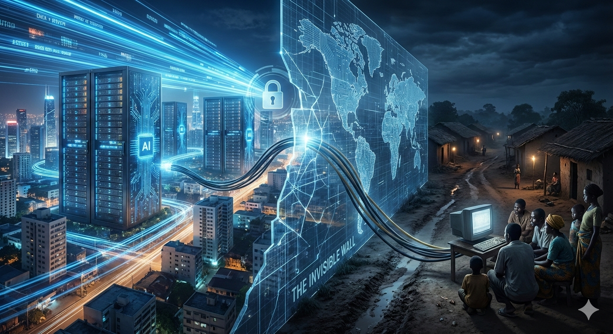

Pernah nggak sih kalian merasa dunia ini makin "kecil" karena internet? Kita bisa video call teman di luar negeri atau akses informasi apa pun cuma bermodal jempol. Tapi, jujur aja, di balik kemudahan itu ada satu kenyataan pahit yang sering kita hiraukan: Ketidaksetaraan global yang sekarang bentuknya makin nggak kasat mata.
Banyak yang mengira ketidaksetaraan itu cuma soal angka di rekening. Padahal, kalau kita bedah pakai kacamata yang lebih teknis, masalahnya ada pada asimetri informasi yang terjadi secara masif. It’s not just about wealth; it’s about who has the key to the digital world and who is left behind in the dark.
Secara global, kita sedang menghadapi fenomena di mana satu pihak punya akses data yang melimpah, sementara pihak lain benar-benar buta. Data dari International Telecommunication Union (ITU) tahun 2023 menunjukkan bahwa sekitar 2,6 miliar orang atau sepertiga populasi dunia masih offline.
Di sinilah digital divide bukan sekadar istilah keren, tapi kenyataan yang pahit. Bayangkan, di saat kita membicarakan AI dan high-speed broadband, kecepatan internet rata-rata di negara maju bisa mencapai puluhan kali lipat dibanding negara berkembang. Ketimpangan akses ini menciptakan jurang pendidikan dan ekonomi yang makin lebar. Technology was supposed to be the great equalizer, but without proper infrastructure, it actually widens the gap.
Masalahnya bukan cuma soal "punya internet" atau enggak. Konsep inti yang sering terlupakan adalah kedaulatan data (data sovereignty). Saat ini, sebagian besar aliran data global dikuasai oleh segelintir korporasi di negara maju. Negara-negara berkembang seringkali hanya menjadi "ladang data" tanpa punya kendali atas bagaimana informasi mereka diproses atau dimanfaatkan.
Sebagai orang yang melihat dunia melalui arsitektur sistem, aku sadar bahwa solusi ketidaksetaraan ini nggak bisa cuma dengan bagi-bagi laptop gratis. It’s much deeper than that. Kita butuh desain sistem yang inklusif. Misalnya:
Melihat fenomena ini membuat aku sadar bahwa urusan teknologi itu nggak pernah netral. Setiap keputusan dalam merancang sebuah sistem informasi punya dampak sosial yang nyata. Kita nggak bisa cuma mengejar efisiensi sistem tanpa memikirkan keadilan sistemik (systemic fairness).
Pada akhirnya, kemajuan yang sebenarnya bukan diukur dari seberapa canggih sistem yang bisa kita buat, tapi seberapa banyak orang yang bisa ikut terbantu oleh sistem tersebut. The goal isn't just to build faster systems, but to build fairer ones. Karena pada akhirnya, teknologi yang keren itu nggak ada gunanya kalau cuma bisa dinikmati oleh segelintir orang, kan? Because in the end, a system is only as good as its weakest link.